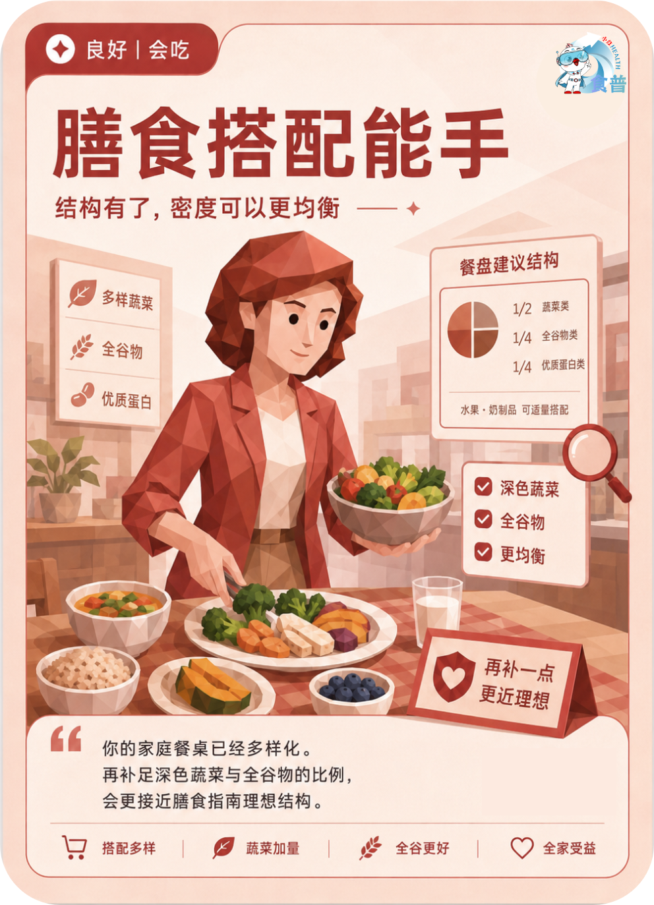

健康主理人
良好
会吃
F09
膳食搭配能手
结构有了,密度可以更均衡
你的家庭餐桌已经多样化。再补足深色蔬菜与全谷物的比例,会更接近膳食指南理想结构。
手机端可点击“打开原图”后长按图片保存；也可以直接长按上方图卡保存。

结构有了,密度可以更均衡
你的家庭餐桌已经多样化。再补足深色蔬菜与全谷物的比例,会更接近膳食指南理想结构。
手机端可点击“打开原图”后长按图片保存；也可以直接长按上方图卡保存。